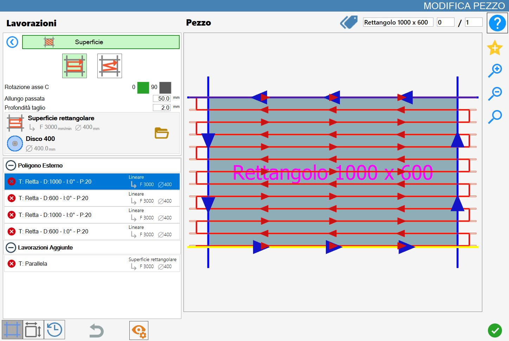
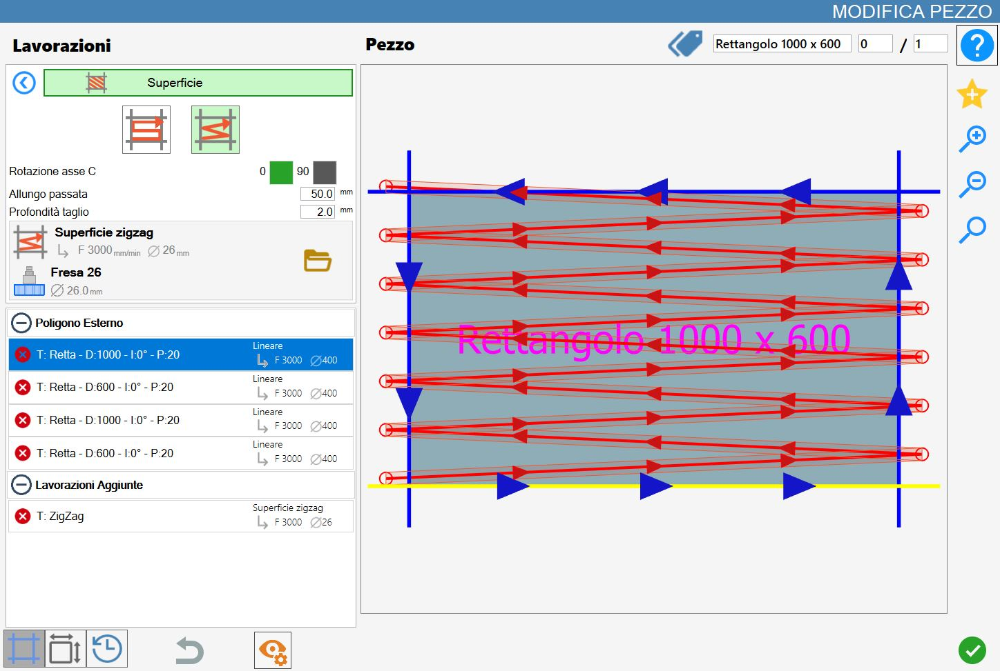
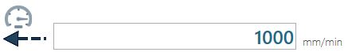

Mit dieser Funktion kann der Bediener Bearbeitungen auf der Materialoberfläche ausführen.

Bearbeitungsarten
Um diese Bearbeitung zu verwenden, muss zunächst einer der beiden verfügbaren Modi über die entsprechende Schaltfläche ausgewählt werden:
Die Modi „Rechteckige Oberfläche“ und „Zickzack-Oberfläche“ schließen sich gegenseitig aus: Durch Aktivieren eines Modus wird der andere automatisch deaktiviert.
/2.3-20250702-115519.png) | Rechteckige Oberfläche |
/3.3-20250702-115539.png) | Zickzack-Oberfläche |
Parameter
Drehung C-Achse | Bestimmt die Ausrichtung der Bearbeitung, die in Bezug auf die Arbeitsebene horizontal (0_) oder vertikal (90_) sein kann. |
Bahnverlängerung | Jeder durch diese Bearbeitung erzeugte Schnitt wird sowohl am Anfang als auch am Ende um die in diesem Parameter angegebene Länge verlängert. |
Schnitttiefe | Gibt die Bearbeitungstiefe im Material an. |
Ausführung der Bearbeitung
Die Bearbeitung kann angewendet werden, indem die Schaltfläche links neben dem entsprechenden Schnitt in der Polygonliste gedrückt wird.
Ein rotes Symbol mit einem „X“ zeigt an, dass die Bearbeitung nicht auf den gewünschten Schnitt angewendet werden kann.
Ausführung Rechteckige Oberfläche
Nach Einstellung der Bearbeitungsparameter eine Seite des Werkstücks auswählen, auf der die Bearbeitung ausgeführt werden soll.
Die Schnitte werden von unten nach oben ausgeführt.
Ausführung Zickzack-Oberfläche
Nach Einstellung der Bearbeitungsparameter eine Seite des Werkstücks auswählen, auf der die Bearbeitung ausgeführt werden soll.
Die Schnitte werden von unten nach oben ausgeführt.

Bearbeitungsparameter der Platte
Der Bediener kann die Parameter für Oberflächenbearbeitungen im Panel der Bearbeitungsparameter der Platte ändern.
/5.02.png)
Rechteckige Oberfläche
Dieser Bildschirm zeigt die Bearbeitungsparameter für den Modus „Rechteckige Oberfläche“.
/9.2.1-20250702-133450.png)
Parameterbeschreibung
/4.1_c-20250703-065057.png) | Abstand zwischen Bahnen im Vorlauf |
/4.2_c-20250703-065231.png) | Abstand zwischen Bahnen im Rücklauf |
/4.3_c-20250703-065258.png) | Nur Vorlaufbahnen |
/4.4_c-20250703-065325.png) | Nur Rücklaufbahnen |
/4.5_c-20250703-065355.png) | Scheibe am Bahnende anheben |
/4.6_c-20250703-065456.png) | Kolbendruck |
Die Aktivierungen der Parameter für Bahnen in einer bestimmten Richtung schließen sich gegenseitig aus.
Wenn einer der beiden aktiviert ist, erzwingt das Programm auch die Aktivierung des Anhebens der Scheibe am Ende der Bahn.
Beschreibung der Geschwindigkeitsparameter
/5.1_b-20250313-160704.png) | Eintauchen |
/5.2_b-20250703-061911.png) | Vorwärts |
 | Rückwärts |
Zickzack-Oberfläche
Dieser Bildschirm zeigt die Bearbeitungsparameter für den Modus „Zickzack-Oberfläche“.
/9.3.1-20250703-060757.png)
Parameterbeschreibung
/6.1_c-20250703-070354.png) | Abstand zwischen Bahnen im Vorlauf |
/6.2_c-20250703-070442.png) | Abstand zwischen Bahnen im Rücklauf |